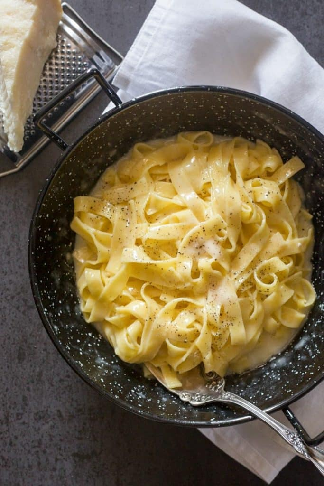

Traditional Alfredo pasta, known in Italy as Fettuccine al burro, is a very simple dish made with just fettuccine, butter, and Parmigiano-Reggiano cheese. The creamy texture comes purely from emulsifying the pasta water, butter, and cheese—there is no cream, garlic, or other additions in the original Roman version.

Traditional Alfredo Pasta
Ingredients
100 g freshly grated Parmesan Cheese (divided)
113 g butter
230 g long pasta (fetuccine)
black pepper to taste
Directions
In a large pot of boiling salted water cook the fettuccine al dente.
In a medium pan add 1/2 the butter, 1/4 cup Parmesan cheese and approximately 3-5 tablespoons of hot pasta water. On low medium heat, whisk together to make a cream.
Add the drained pasta, another 3-5 tablespoons of hot pasta water or a little more if needed, the remaining butter and parmesan cheese, gently toss together on low heat (for about 1 minute) and serve immediately, sprinkle with parmesan cheese and black pepper. Enjoy!